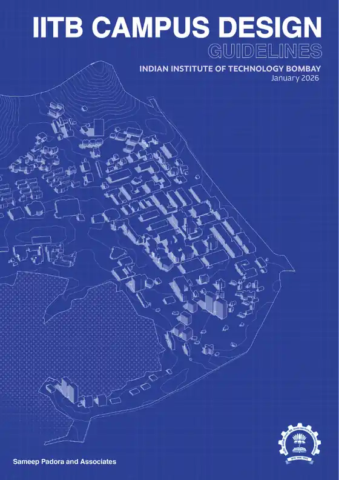

Work
05 projects Interactive atlas
Interactive atlasOpen Bandra
2026Every existing and reserved open space in H/W Ward's Development Plan 2034, read plot by plot against what is on the ground.
 Research series
Research seriesMumbai AQI
2026Can we design our way out of high AQI? Three levers for Mumbai: building codes, construction guidelines and legislation.
 Exhibitions
ExhibitionsExhibitions
2016 to 2023In the Name of Housing and (de)Coding Mumbai: sPare's housing research, shown in Mumbai, Pune, Ahmedabad and Delft.
Film · Case study
Temporal Spaces
2024Mumbai is a different city by the hour. Finding the streets and lots that fall empty, and turning them into places to play.

Design guidelinesIIT Bombay Campus Design Guidelines
2026Guidelines, not codes. Reading IIT Bombay's campus for what makes it its own, and turning that into a shared frame for how it grows.